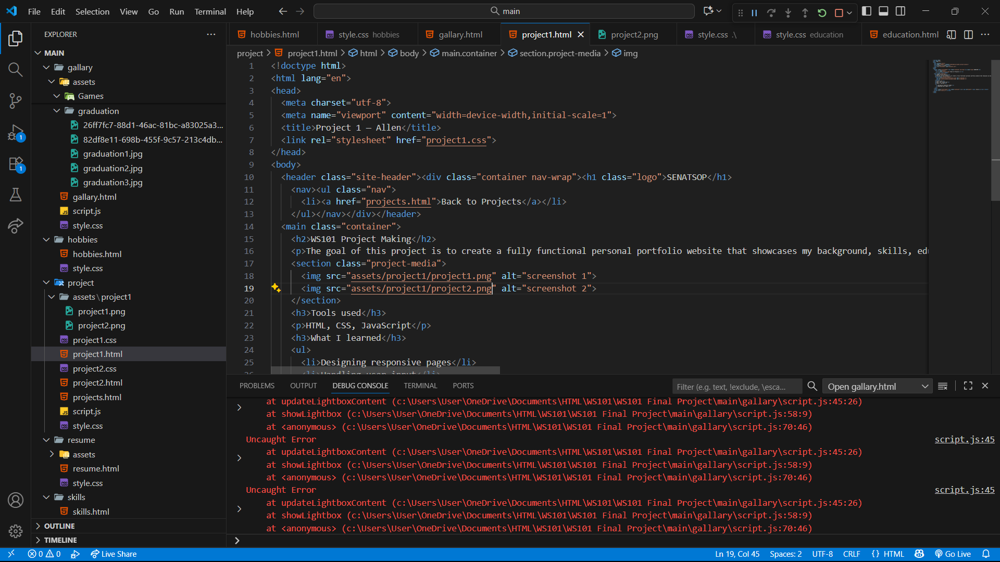
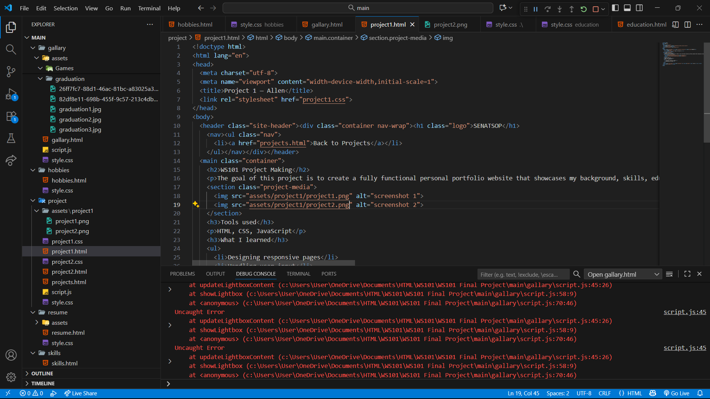

WS101 Project Making
The goal of this project is to create a fully functional personal portfolio website that showcases my background, skills, education, and projects. It serves as an online representation of myself where visitors can learn more about who I am, what I do, and how to contact me. This project demonstrates my understanding of HTML, CSS, and basic web design principles.
 

Tools used
HTML, CSS, JavaScript
What I learned
- Designing responsive pages
- Handling user input